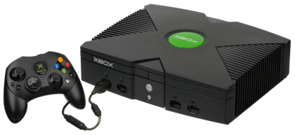
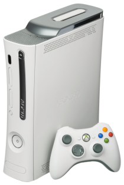

Xbox
O Xbox é um console de vídeo game produzido pela Microsoft. Foi lançado em 15 de novembro de 2001 na América do Norte, 22 de fevereiro de 2002 no Japão, e 14 de Março de 2002 na Austrália e Europa. Foi a primeira incursão da Microsoft no mercado de vídeo games. Como parte da sexta-geração de jogos, o Xbox competiu com Sony PlayStation 2, Sega Dreamcast (que parou as vendas americanas antes que o Xbox fosse colocado à venda) e o Nintendo GameCube. O Xbox foi o primeiro console oferecido por uma empresa norte-americana após o Atari Jaguar parar as vendas em 1996. O nome Xbox foi derivado a partir de uma contração da caixa "DirectX Box", uma referência a Microsoft.
O serviço integrado Xbox Live foi lançado em novembro de 2002 e permitiu que os jogadores jogassem jogos online com uma conexão de banda larga. Ele competiu pela primeira vez com o serviço online do Dreamcast, mas depois competiu principalmente com serviço online do PlayStation 2. Embora esses dois são gratuitos, enquanto o Xbox Live exigida uma assinatura, bem como somente conexão de banda larga, que ainda não foi completamente adotado. Xbox Live foi um sucesso devido ao melhor servidor, e recursos como uma lista de amigo e conquistas de títulos e etc.
Xbox 360
O Xbox 360 é o segundo console de videogame desenvolvido e produzido pela Microsoft e sendo o sucessor do Xbox. O Xbox 360 concorreu com Sony PlayStation 3 e Nintendo Wii, como parte da sétima geração de consoles de videogame. Em 30 de setembro 2012, 70 milhões de cópias do console foram vendidas em todo o mundo. O Xbox 360 foi apresentado oficialmente na MTV em 12 de maio de 2005, com o lançamento detalhado e informações dos jogos divulgados no final daquele mês, no Electronic Entertainment Expo (E3). O console esgotou completamente após a liberação em todas as regiões, exceto no Japão.
